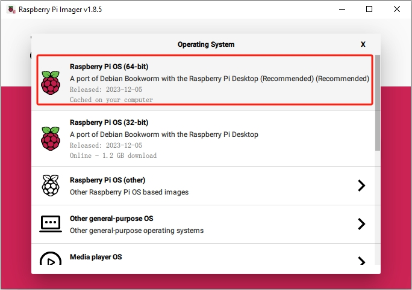

Nota
¡Hola, bienvenido a la comunidad de entusiastas de SunFounder Raspberry Pi, Arduino y ESP32 en Facebook! Sumérgete más profundamente en Raspberry Pi, Arduino y ESP32 con otros entusiastas.
¿Por qué unirse?
Soporte experto: Resuelve problemas postventa y desafíos técnicos con la ayuda de nuestra comunidad y equipo.
Aprende y comparte: Intercambia consejos y tutoriales para mejorar tus habilidades.
Vistas previas exclusivas: Obtén acceso anticipado a anuncios de nuevos productos y avances.
Descuentos especiales: Disfruta de descuentos exclusivos en nuestros productos más recientes.
Promociones festivas y sorteos: Participa en sorteos y promociones de temporada.
üëâ ¬øListo para explorar y crear con nosotros? Haz clic en [Aqu√≠] y únete hoy mismo.
Instalación del Sistema Operativo
Componentes Necesarios
Raspberry Pi 5
Una Computadora Personal
Una tarjeta Micro SD
Pasos de Instalación
Visita la página de descarga de software de Raspberry Pi en Raspberry Pi Imager. Elige la versión de Imager compatible con tu sistema operativo. Descarga y abre el archivo para iniciar la instalación.

Puede aparecer un aviso de seguridad durante la instalación, dependiendo de tu sistema operativo. Por ejemplo, Windows podría mostrar un mensaje de advertencia. En estos casos, selecciona Más información y luego Ejecutar de todas formas. Sigue las instrucciones en pantalla para completar la instalación del Raspberry Pi Imager.
Inserta tu tarjeta SD en la ranura para tarjetas SD de tu computadora o laptop.
Inicia la aplicación Raspberry Pi Imager haciendo clic en su icono o escribiendo
rpi-imageren tu terminal.
Haz clic en CHOOSE DEVICE y selecciona tu modelo específico de Raspberry Pi de la lista.
Luego haz clic en Choose OS y selecciona un sistema operativo para la instalación.
Haz clic en Choose Storage y selecciona el dispositivo de almacenamiento adecuado para la instalación.
Nota
Asegúrate de seleccionar el dispositivo de almacenamiento correcto. Para evitar confusiones, desconecta cualquier dispositivo de almacenamiento adicional si hay varios conectados.

Haz clic en NEXT y luego en EDIT SETTINGS para personalizar la configuración de tu sistema operativo. Si tienes un monitor para tu Raspberry Pi, puedes omitir los siguientes pasos y hacer clic en “Yes” para comenzar la instalación. Ajusta otras configuraciones más tarde en el monitor.

Define un nombre de host para tu Raspberry Pi.
Nota
El nombre de host es el identificador de red de tu Raspberry Pi. Puedes acceder a tu Pi usando
<hostname>.localo<hostname>.lan.
Crea un Nombre de Usuario y Contraseña para la cuenta de administrador de Raspberry Pi.
Nota
Establecer un nombre de usuario y una contraseña únicos es vital para asegurar tu Raspberry Pi, que no tiene una contraseña predeterminada.

Configura la LAN inalámbrica proporcionando el SSID y la Contraseña de tu red.
Nota
Establece el
Wireless LAN countryal código ISO/IEC alpha2 de dos letras correspondiente a tu ubicación.
Haz clic en SERVICES y activa SSH para el acceso remoto seguro basado en contraseña. Recuerda guardar tu configuración.

Confirma la configuración seleccionada haciendo clic en Yes.

Si la tarjeta SD contiene datos existentes, asegúrate de hacer una copia de seguridad para evitar la pérdida de datos. Procede haciendo clic en Yes si no se necesita una copia de seguridad.

El proceso de instalación del sistema operativo comenzará en la tarjeta SD. Aparecerá un cuadro de diálogo de confirmación al finalizar.